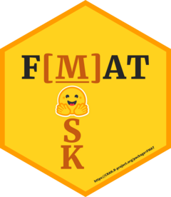

Changelog
Source:NEWS.md
FMAT 2024.4
CRAN release: 2024-04-29
- Added
BERT_vocab()andICC_models(). - Improved
summary.fmat(),FMAT_query(), andFMAT_run()(significantly faster because now it can simultaneously estimate all [MASK] options for each unique query sentence, with running time only depending on the number of unique queries but not on the number of [MASK] options). - If you use the
reticulatepackage version ≥ 1.36.1, thenFMATshould be updated to ≥ 2024.4. Otherwise, out-of-vocabulary [MASK] words may not be identified and marked. NowFMAT_run()directly uses model vocabulary and token ID to match [MASK] words. To check if a [MASK] word is in the model vocabulary, please useBERT_vocab().
FMAT 2024.3
CRAN release: 2024-03-22
- The FMAT methodology paper has been accepted (March 14, 2024) for publication in the Journal of Personality and Social Psychology: Attitudes and Social Cognition (DOI: 10.1037/pspa0000396)!
- Added
BERT_download()(downloading models to local cache folder “%USERPROFILE%/.cache/huggingface”) to differentiate fromFMAT_load()(loading saved models from local cache). But indeedFMAT_load()can also download models silently if they have not been downloaded. - Added
gpuparameter (see Guidance for GPU Acceleration) inFMAT_run()to allow for specifying an NVIDIA GPU device on which the fill-mask pipeline will be allocated. GPU roughly performs 3x faster than CPU for the fill-mask pipeline. By default,FMAT_run()would automatically detect and use any available GPU with an installed CUDA-supported Pythontorchpackage (if not, it would use CPU). - Added running speed information (queries/min) for
FMAT_run(). - Added device information for
BERT_download(),FMAT_load(), andFMAT_run(). - Deprecated
parallelinFMAT_run():FMAT_run(model.names, data, gpu=TRUE)is the fastest. - A progress bar is displayed by default for
progressinFMAT_run().
FMAT 2023.8
CRAN release: 2023-08-11
- CRAN package publication.
- Fixed bugs and improved functions.
- Provided more examples.
- Now use “YYYY.M” as package version number.
FMAT 0.0.9 (May 2023)
- Initial public release on GitHub.